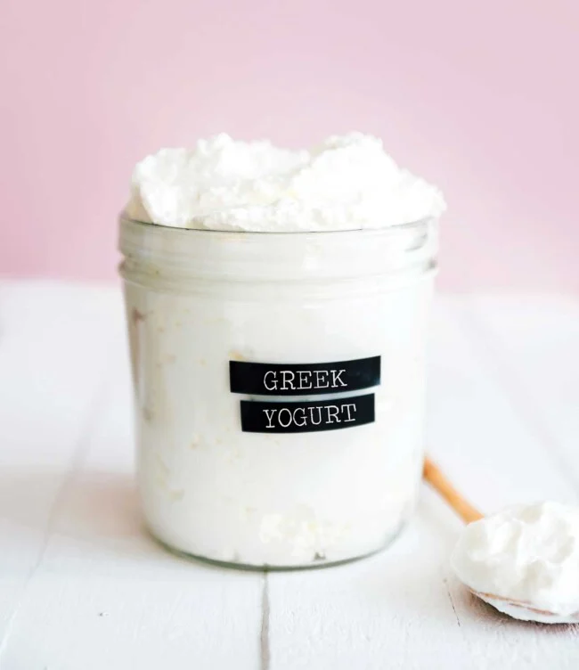

Greek Yogurt

Description
The simple guide on how to make healthy homemade Greek yogurt (with just two simple ingredients)! Learn how to make delicious and creamy Greek yogurt with this easy recipe. With just a few simple ingredients and some basic equipment, you can enjoy homemade Greek yogurt that is healthier and more flavorful than store-bought versions.
Ingredients
- 4 cups whole milk (960 mL)
- ¼ cup plain store bought yogurt with live cultures
Steps
- Place milk in a medium pot and heat to 185-200°F (85-93°C), stirring frequently to preventing a skin from forming.
- Transfer the pot with milk to an ice bath (I filled my sink with ice and water), to cool milk to 100-110°F (37-43°C).
- Pour ½ cup of the warm milk into a separate clean jar or bowl. Mix in plain yogurt, stirring until yogurt is well blended. Add remaining milk and mix well.
- Cover jar or bowl with a lid, wrap in a moist, warm towel to keep in heat, and place in oven. Turn on oven light to keep warm, and let the bacteria do its yogurt making magic for 4 to 8 hours (or overnight).
- You can eat the yogurt like this, or strain it to make Greek yogurt. To strain, line a mesh sieve with cheesecloth (or paper towels, coffee filters etc), and pour yogurt in. Place over a large bowl and let strain in the fridge for a few hours (or overnight), until it’s reach a consistency you like.